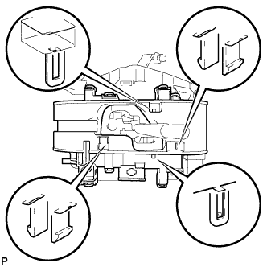
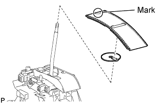
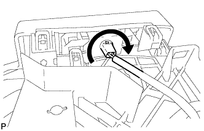
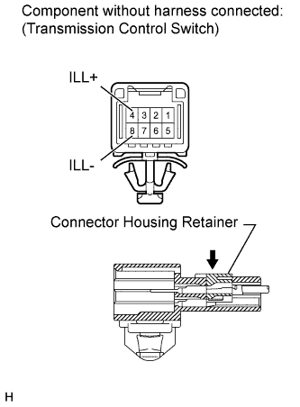
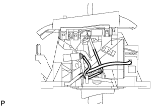
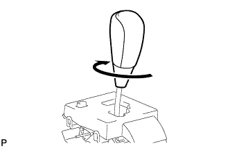

SHIFT LEVER > REASSEMBLY |
| 1. INSTALL SHIFT LOCK CONTROL ECU |
 |
Attach the 3 claws to install the ECU to the floor shift.
Connect the shift lock solenoid connector.
| 2. INSTALL LOWER POSITION INDICATOR HOUSING |
 |
Attach the 6 claws to install the housing.
| 3. INSTALL SHIFT LOCK RELEASE BUTTON |
 |
Attach the 2 claws to install the spring and button.
| 4. INSTALL POSITION INDICATOR SLIDE COVER AND NO. 2 POSITION INDICATOR SLIDE COVER |
 |
Install the No. 2 position indicator slide cover to the position indicator slide cover.
Install the position indicator slide cover together with the No. 2 position indicator slide cover.
| 5. INSTALL POSITION INDICATOR LENS |
 |
Attach the 4 claws to install the position indicator lens.
| 6. INSTALL POSITION INDICATOR HOUSING ASSEMBLY |
 |
Attach the 4 claws to install the position indicator housing.
| 7. INSTALL INDICATOR LIGHT WIRE SUB-ASSEMBLY |
 |
Align the wire with the key part of the lower position indicator housing, and install the wire. Then rotate the wire clockwise until it locks.
 |
Securely connect the 2 wire terminals to terminal 4 (ILL+) and 8 (ILL-) of the transmission control switch connector. Then push the connector housing retainer to lock it.
 |
Check the shift lock solenoid and indicator light wire harness as shown in the illustration.
| 8. INSTALL SHIFT LEVER KNOB SUB-ASSEMBLY |
 |